Board, pieces and a big refactor
I made some great headway on my game today. I've been working with Claude, which has been really helpful for streamlining the process.
Visual design
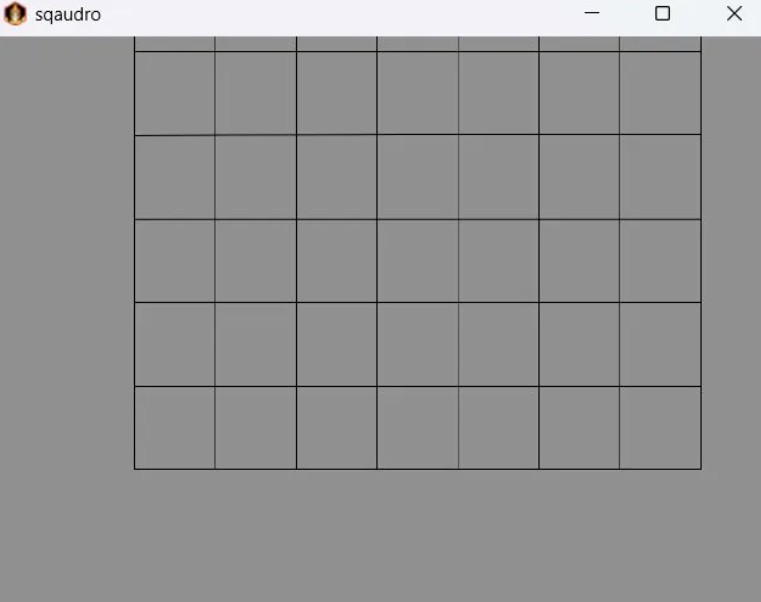

I finished the board design in Canva along with the assets for the movement indicators and pieces. When I imported them, the asset sizes didn't line up with the application window. After working out the cause with Claude, the simplest fix was to resize the window to match the asset resolution.
Refactoring for better structure
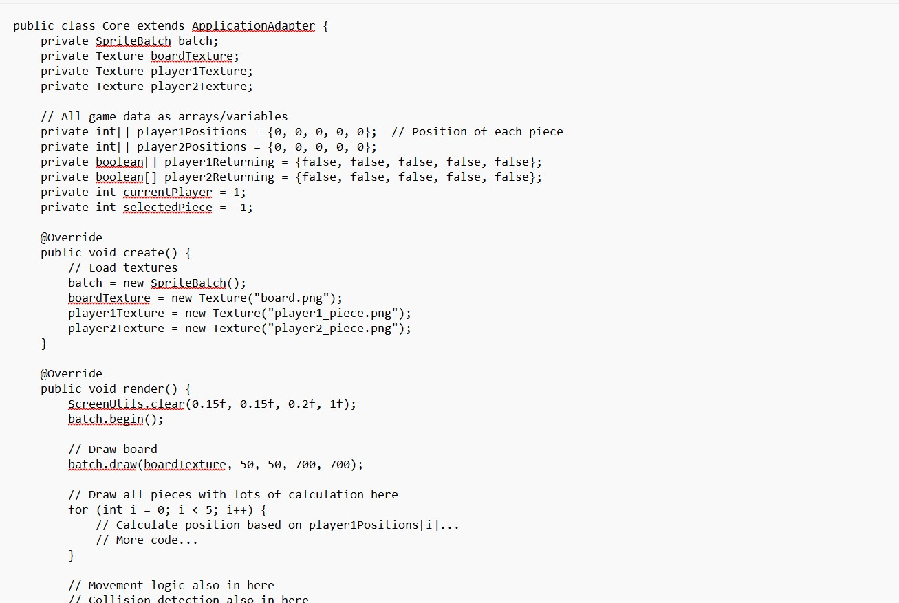
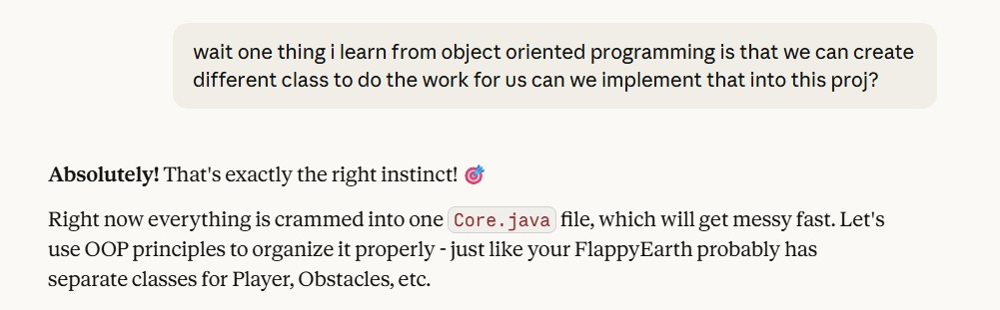
The first version of the code the AI gave me broke the Single Responsibility Principle: board logic, piece attributes and movement were all in one file. That kind of coupling makes code hard to maintain, so I split it into separate modules. This follows core OOP ideas, encapsulation and separation of concerns, so changing one part doesn't break the rest.
Implementation and documentation
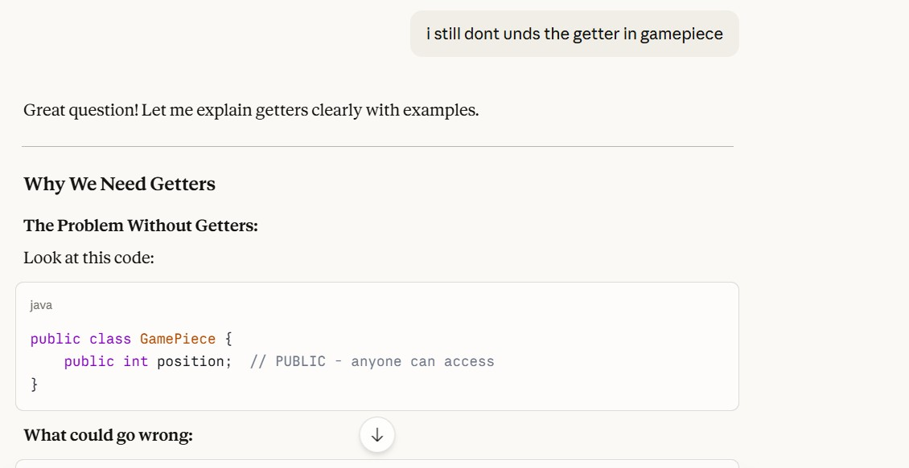
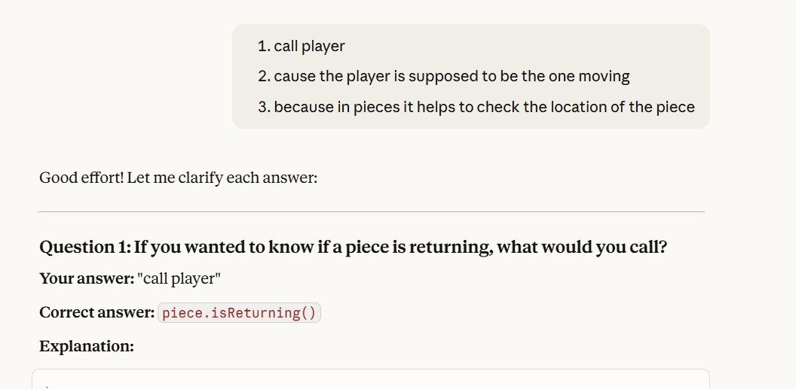
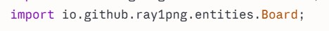
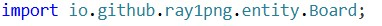
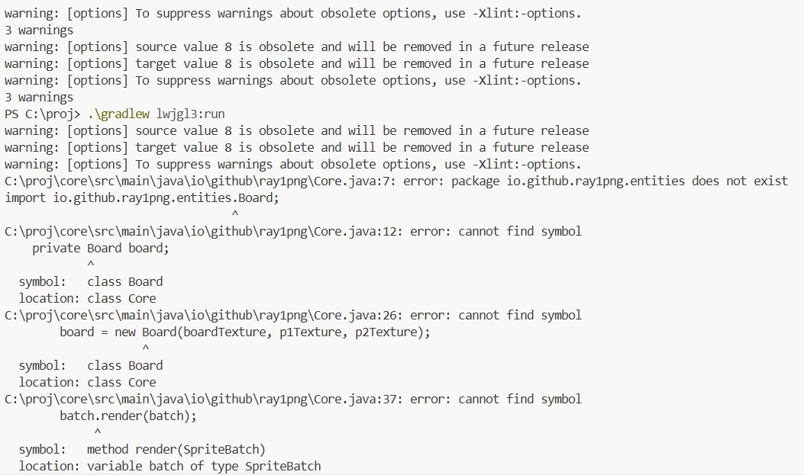
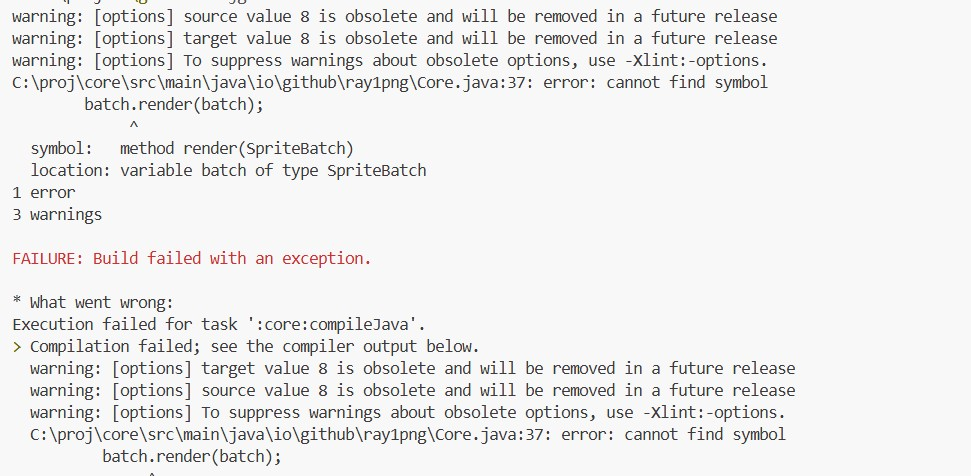
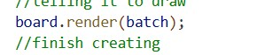
Next I wrote the code with that new structure. Typing it out myself helped me reinforce what I'd studied, and I
added detailed comments, both to check my own understanding and to build the habit of documenting clearly.
When I hit a runtime error in the Entity file (see the terminal screenshots), I troubleshot it on my
own, found the bug and got the program running.
Result
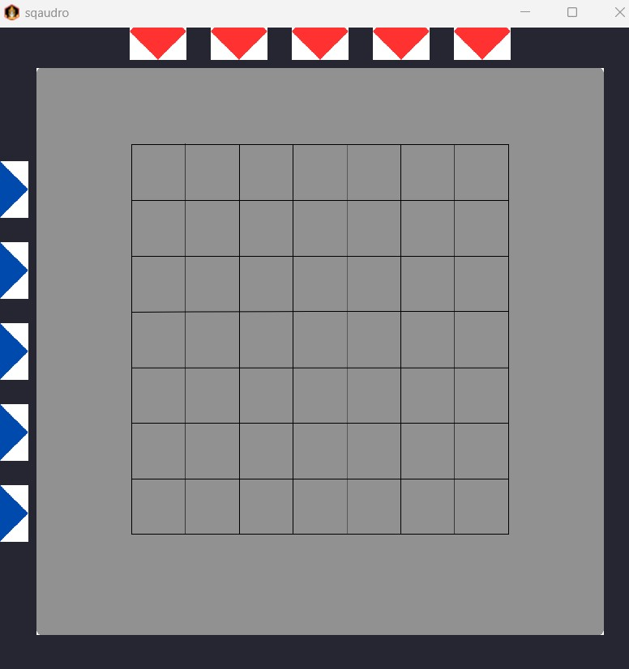
The board, pieces and movement indicators all render as intended inside the modular structure. A big milestone: the core visual and structural parts now work together.
Still to do: the board and pieces don't look nice enough yet.